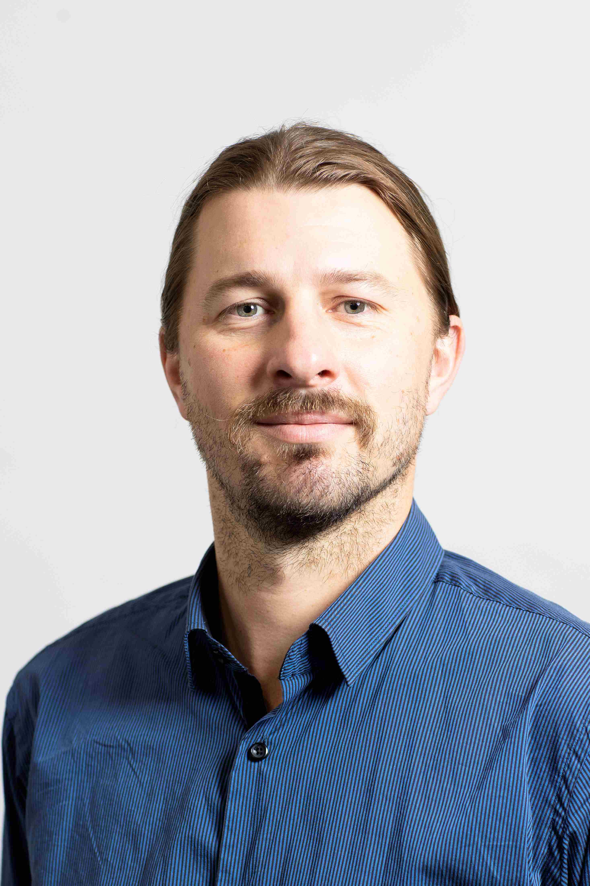

John Holik
I am a researcher working at the intersection of speech science, signal processing, and applied analytics. My work focuses on developing automated methods for analysing complex acoustic and behavioural data with an emphasis on reliability, transparency, and practical impact.
Experience
- Researcher in speech and audio analytics at the Sydney Voice Lab, University of Sydney
- Scientific software and GUI tool development
- Customisation of automated transcription and diarisation pipelines
- Laboratory setup and operation for advanced materials synthesis (Physical Vapour Deposition) and characterisation (Spectroscopy, Electron Microscopy, Atomic Force Microscopy, X-ray Diffraction)
Teaching
- In my role in the Syndey Voice Lab I provided assistance and guidance to Speech Pathology Honours students
- I have over 10 years experience running tutorials and laboratories in first year Radiation Physics, Physics, Statistics and Mathematics accross both The University of Sydney and Western Sydney University
